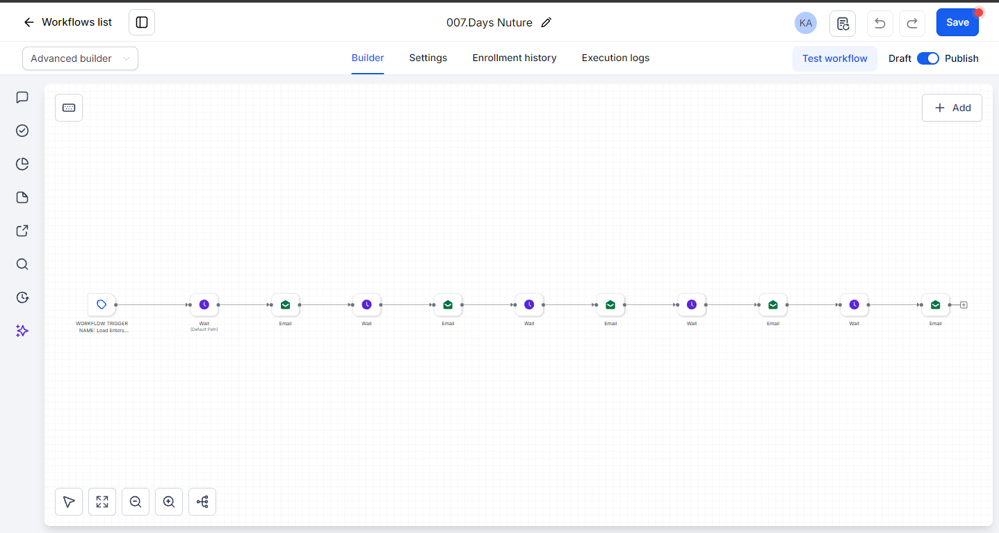

A landing page only wins the first 10 seconds. This is the lead engine that runs the next 30 days — every enquiry chased, reminded, recovered and recycled, without anyone touching an inbox.
Live system, not a diagram — every stage below shows the actual build, screenshotted from the accountInstaller fills the form, then goes quiet. Instead of dying in a spreadsheet, the lead drops into a follow-up sequence: spaced emails and texts until they reply or book. The moment they respond, the sequence stops itself and the team is pinged.
Deal marked lost? The system waits 30 days, then re-opens the conversation automatically. If they engage, they re-enter the pipeline as a fresh lead. Lost today is not lost forever — and nobody has to remember to follow up.
The silent-lead sequence: spaced emails with waits between every send. Click to enlarge.

Seven small workflows hand off to each other instead of one giant one. When something needs changing, you change one pipe — not the whole system.
Each stage stamps the lead's status and removes the old one. A lead can only ever be in one stage — no double emails, no crossed wires.
Every message has a wait behind it. Reminders land days apart, and any reply pulls the lead out of the sequence instantly.
Internal pings at the moments that matter: new qualified lead, call booked, deal won. Automation does the chasing; humans do the closing.
Form fields, the revenue qualifier and the area check all map to stages here on day one. The pages get the lead — this keeps it.
See the 3 landing concepts Open concept 1